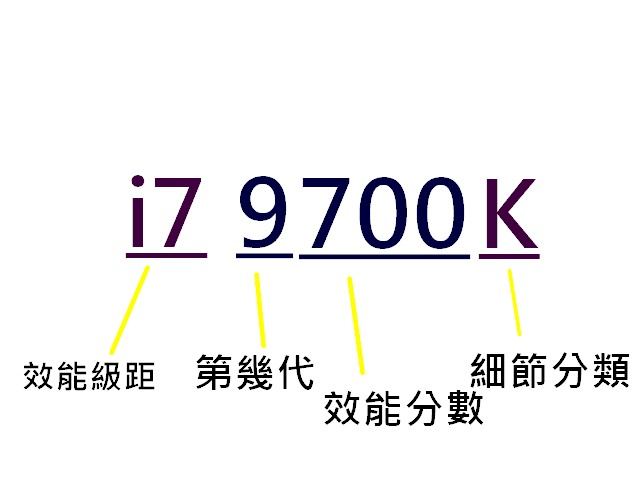
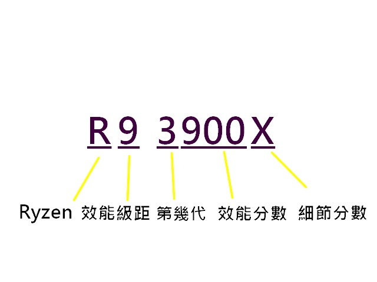
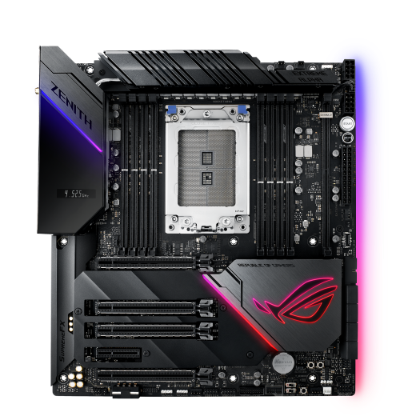
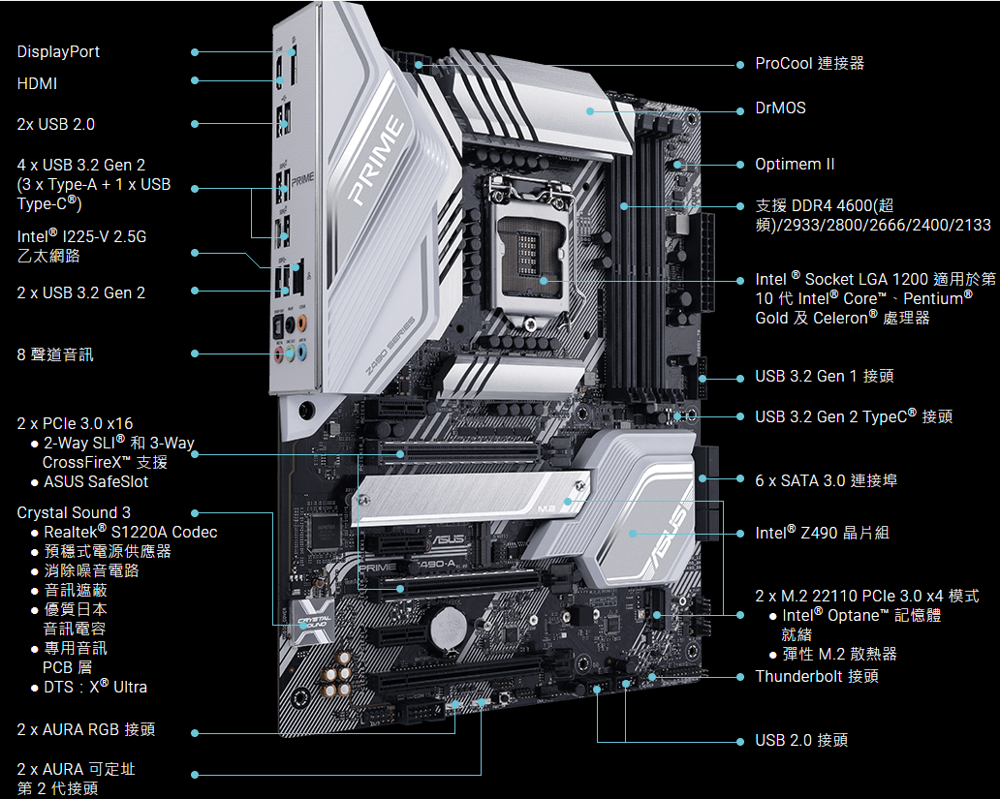
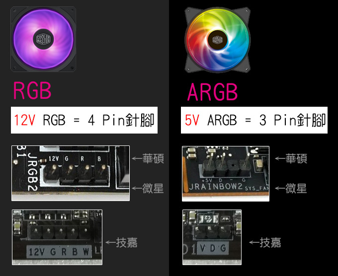

處理器、主機板
CPU & MOTHERBOARD

CPU，電腦中央處理單元，負責運算邏輯、協調電腦中的各個元件，相當於電腦的大腦。
要判斷一顆 CPU 的效能可以從三項指標來看：核心數量、 執行序數量、時脈

效能級距：在第幾代數上沒差太多的時候 I9 > I7 > I5 > I3
代次：代表產品的推出前後
效能分數：越大越好
細節分類：用來細分同樣型號下的分類，K 可超頻、H 使用較好內顯、Q 四核心、X 效能極強、 F 無內顯、U 低功耗、S 電源優化省電、H 高效能（筆電）
代次：代表產品的推出前後
效能分數：越大越好
細節分類：用來細分同樣型號下的分類，K 可超頻、H 使用較好內顯、Q 四核心、X 效能極強、 F 無內顯、U 低功耗、S 電源優化省電、H 高效能（筆電）

效能級距：在第幾代數上沒差太多的時候 R9 > R7 > R5 > R3
代次：代表產品的推出前後
效能分數：越大越好
細節分類：用來細分同樣型號下的分類，X 代表有自動超頻、G 代表有內顯
* 除了 Althlon 系列，AMD 的處理器皆可超頻
代次：代表產品的推出前後
效能分數：越大越好
細節分類：用來細分同樣型號下的分類，X 代表有自動超頻、G 代表有內顯
* 除了 Althlon 系列，AMD 的處理器皆可超頻
處理器選購指南
- 不管是哪個廠牌 CPU 隨著每代更替，每代的腳位都不同，而不同腳位無法混用，因此須注意主機板上的腳位
- CPU 的 TDP 為其限定之最大發熱量，並不是它的功耗
- CPU 在越熱的環境下，會導致它性能下降
- 超頻雖然可能會導致 CPU 壽命減短，但 CPU 的耐用度事實上非常高
- I7 或 R7 以上的 CPU 最好使用塔散以上等級的散熱方案
- 散熱膏必須抹的均勻，也不宜擠太多
超頻？
讓 CPU 穩定的在超出基礎頻率的狀態下運行
Turbo Boost？
Intel 所開發給 CPU 的技術，在溫度和電流在規定範圍內時，允許某些核心超出基頻 AMD 也有相似的技術稱作 Turbo Core

主機板是很重要的電腦中樞，它連接了電腦所有的零件，更是決定了一台電腦的絕對上限， 有沒有良好的擴充性，能不能超頻，主機板說了算，總而言之，主機板是電腦的中樞地帶。


有些主機板上有提供 RGB 或 ARGB 接口，並且可以透過軟體控制燈光，但兩種在主機板上的接口不同不能混插。
主機板選購指南
- 一般價位大概在 2500 上下
- 擴充性越好的主機板越貴
- 好的主機板才能超頻否則可能會造成不可逆的後果，實際以官網規範為主
- 主機板的 CPU 插座須配合 CPU 本身的腳位
- ARGB 和 RGB 接口不同且不能混插
- 大多接口都有做防呆，所以基本上是不會插錯的
- 主機板除了自己要接 24 PIN（20 PIN）電源線還要接上 CPU 的，除此之外還要接電給風扇